Cooling Fan Kit Installation
Purpose
Instructions to install the new Cooling Fan Assembly Kit for the PC Bay.
The existing dual chassis fan assembly on the left side of the Panther does not provide adequate cooling capability for the Panther Fusion Computer Bay. This new Cooling Fan Kit adds an extra fan mounted over the 24V power supply at the rear of the Computer Bay to provide extra cooling.
Performed on a Panther that has the dual chassis fan assembly installed.
Any Panther System with the single chassis fan cannot have the new Cooling Fan Kit installed.
Parts and Materials Required
- Fusion Cooling Fan Assembly Kit
- (1) Fan Duct, Power Supply Mounted
- (3) Harnessed Fan, Hi-Flow
- (1) Cable, Splitter, 3X Hi-Flow Fans
- (1) Fan Sleeve, Black Rubber, 92MM
- (2) Fan Guard, Metal, 92MM
- (4) Fan Guard Mounts, Rubber Ultra-Soft
- (4) Fan Guard Rivet, Black Plastic
- (4) Screw, M4X8
- Panther Tool Kit
- Proper PPE
Time Required
- 30 minutes to install fan
- 60 minutes for testing and verification (after fusing the Fusion to the Panther System)
Procedure
- Put on proper PPE.
- Power down the Panther System.
- Power down the PC.
- Unfuse the Fusion from the Panther System referring to Unfuse Procedure (Separate the Fusion Module from the Panther System).
- Assemble and install a cooling fan onto the fan duct:
 Install the black rubber fan sleeve around one of the new fans as shown. (The rubber sleeve is installed on the same side as the sticker.)
Install the black rubber fan sleeve around one of the new fans as shown. (The rubber sleeve is installed on the same side as the sticker.)

Caution—Verify the sleeve is installed as shown, with the sticker visible on top and the flow arrow pointing up. 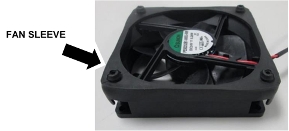
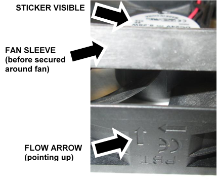
- Turn the fan over.
- Install a Fan Guard using the 4 Fan Guard Rubber Mounts.

NOTE—Pass the end of the Rubber Mount through the Fan Guard and the hole in the fan, then grab the end from underneath and pull firmly to secure the rubber mount. 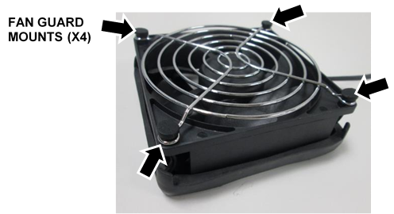
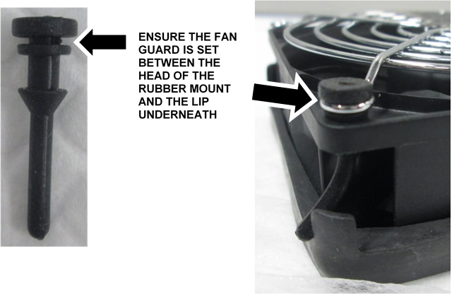
- Set the fan onto the front of the fan duct as shown, push the 4 rubber posts through the 4 large holes, then rotate until secure. The power wire can be at the bottom or side or the fan.
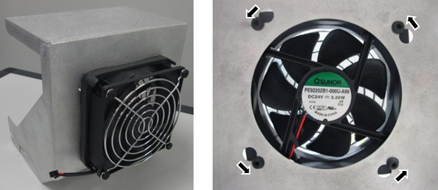
- Install the second Fan Guard on the inside of the fan duct using the 4 Fan Guard plastic Rivets.
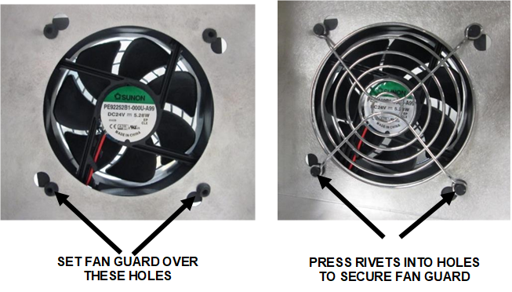
- Safely pull out the Mid-Bay Drawer (remove luminometer injectors) and the Waste Drawer.
- Locate the 24V Power Supply at the back of the PC Bay. Note the pre-existing threaded screw holes at the top of the left and right sides of the power supply.
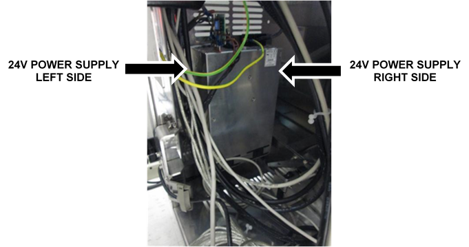
- Insert 2 M4x8 screws provided in the kit on each side of the power supply, into the pre-existing, empty holes near the top of each side. Do not tighten, leave space to slide in the new fan duct.
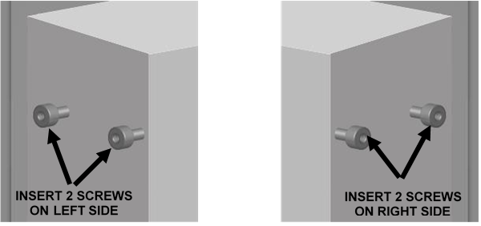
- Install the new fan duct with cooling fan attached onto the 24V power supply.
- First slide the fan duct straight down over the screw (on each side) towards the front of the power supply.
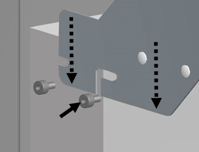
- Slide the fan duct straight back to secure the duct in the rear screw.
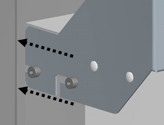
- Tighten the 4 screws.
NOTE—On most systems, there is a group of cables that runs down the side of the frame that needs to be gently moved out of the way to install the fan duct.
Ensure all the 24V power cables are routed through the angled cutout in the side of the fan duct.
- Locate the existing dual chassis fan assembly above the Computer Bay.
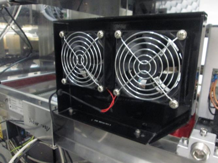
- Trace the fans power cable back to the COP.
- Disconnect the cable from the COP.
NOTE—Remember the exact connection to the COP. Take a picture if necessary to ensure fan is re-connected in the same place. 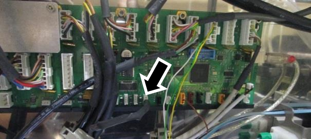
- Remove the cable out of any cable clamps/ties.
- Remove the cable from the frame.
- Replace the 2 existing fans with two new ones from the kit.
NOTE—The hardware and rubber sleeve that holds each fan and fan guard in place on the existing dual fan assembly may vary. Whether metal screws or rubber fasteners are used, re-use all the existing mounting hardware to install the new fans. - Remove each of the existing fans from the bracket. (Either pull the fan straight out or push up and then out to free the fans.
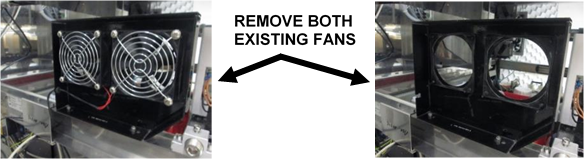
- Remove and save the fan guards and any mounting hardware from the old fans. (Old fans only have one fan guard, not one on both sides.) Discard the old fans.
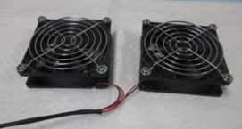
- Re-install both fan guards on the new fans and also the old rubber sleeves.
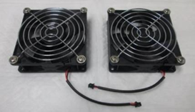
Caution—Verify they are installed on the correct side of the fan, with the flow arrow pointing as shown. 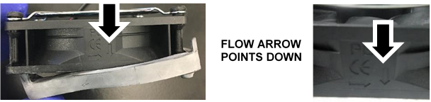
- Re-install both new fans onto the bracket, ensure the cables are on the bottom.
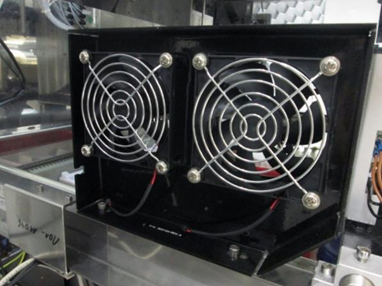
- Connect the 2 new fans to the new splitter cable. (The new fans connect to the end of the splitter cable that splits into 2 black connectors.)
- Slide the black rubber stop into the frame of the fan bracket.
- Pass the cable through the cable shroud on the frame.
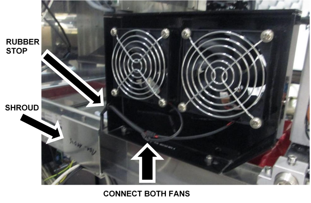
- Route the new splitter cable.
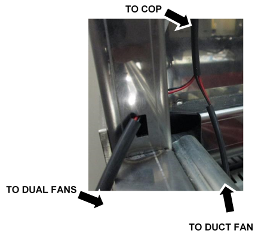
- Verify the splitter cable is routed through the shroud.
- Route the COP connector (white) through the rectangular opening at the back of the frame.
- Pass enough cable through so the single duct fan cable and connector (black) also passes through the opening.
- Route the COP end up through the cable channel in the frame. Follow existing cables. Open and use cable clamps where possible.
- Route the single duct fan cable down to the fan and connect.
- Connect the new splitter cable to the same jack on the COP as the old fan cable.
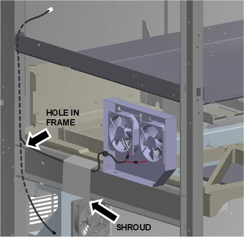
|
|
Caution—Verify the new splitter cable does not interfere with the movement of the Rotary Distributor, Handoff Station or Mid-Bay Drawer. |
Verification
|
|
NOTE—The system can stay unfused to test the new cooling fans, as long as all cables remain connected. |
- Power on the Panther System.
- Power on the PC.
- Log-in to the FSE Shield.
- Start Service Software.
- Under the 4. LiVaCo System and Drawer tab, initialize the Cooling System.
- Under Cover Fan Ctrl, click On.
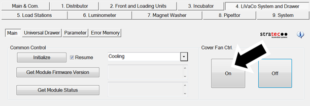
- Verify all 3 fans turn on.
- Verify the air flow on all 3 fans is moving as indicated.
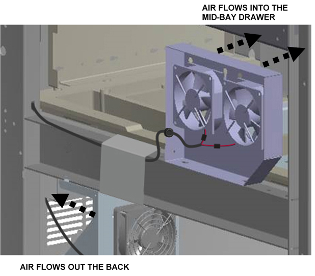
- Safely close the Mid-Bay Drawer and Waste Drawer.
- Power down the Panther System.
- Power down the PC.
- Fuse the Fusion to the Panther System referring to Fuse Procedure (Re-Attach the Fusion to the Panther System).
- Verification is complete.
 button at the top of the page to send feedback, comments, or change requests.
button at the top of the page to send feedback, comments, or change requests.